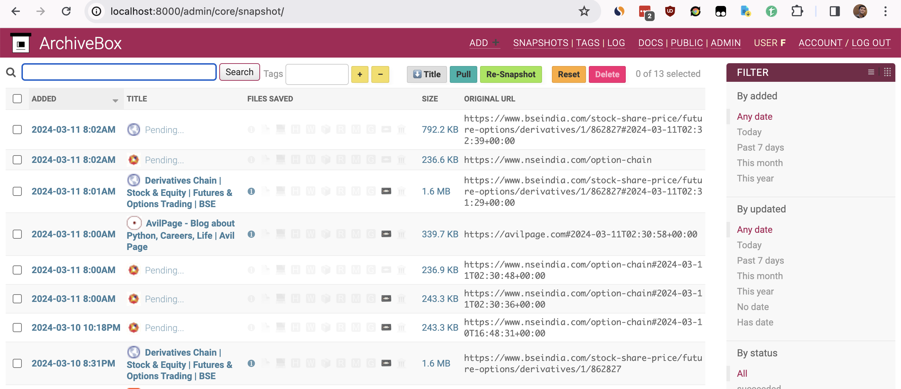

Archiving Option Chain Data
BSE & NSE are the prominent exchanges in India, and they provide option chain data for the stocks & indices listed in their exchange.
The option chain data is available for the current date. But it is not available for the past dates. This is a problem for traders who want to analyze the historical option chain data.
ArchiveBox
ArchiveBox1 is a tool to archive web pages. It can be used to archive the option chain data for the stocks & indices.
Let's install ArchiveBox.
$ pip install archivebox
$ mkdir option_chain
$ cd option_chain
$ archivebox init
$ archivebox setup
We can start the server(defaults to https://localhost:8000) and add URLs manually to archive them.
$ archivebox server

There are 180+ stocks in FNO segment & 6 indices with weekly expiry. We can write a simple Python script to generate all combinations of URLs for the option chain data and archive them using ArchiveBox.
Once URLs is generated, we can use the following command to archive them.
$ archivebox add --input-file urls.txt
These URLs will be archived and stored in the archive directory. Since we want to archive the data regularly, we can use a schedule to archive daily.
$ archivebox schedule --every=day --depth=0 '{{url}}'
This will archive the option chain data for the stocks & indices on a daily basis.
Conclusion
Browsing the archived data of a single url is a bit difficult. Wayback machine provides a better interface to browse the archived data. I have raised an issue2 regarding the same in the ArchiveBox repository. Once the UI issue is resolved, this will serve as a best tool to browse the historical option chain data.